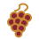
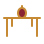

კლასიკური დეგუსტაცია
სამი ღვინის დაგემოვნება მარნის სარდაფში, ყველისა და მჭადის თანხლებით. ხანგრძლივობა — 45 წუთი.
45 ₾ / სტუმარი
სერვისები
აირჩიეთ ის, რაც თქვენს დროსა და ინტერესს შეესაბამება — მოკლე დეგუსტაციიდან სრულ სავენახე დღემდე. ყველა სერვისი წინასწარ ჯავშანს საჭიროებს.
სამი ღვინის დაგემოვნება მარნის სარდაფში, ყველისა და მჭადის თანხლებით. ხანგრძლივობა — 45 წუთი.
45 ₾ / სტუმარივენახიდან ქვევრამდე — გავივლით მთელ გზას, ხუთი ღვინის დაგემოვნებით და მარნის ისტორიის მოთხრობით.
70 ₾ / სტუმარი
სექტემბერ-ოქტომბერში შემოგვიერთდით რთველზე — ყურძნის კრეფა, დაწურვა და ტრადიციული სუფრა ვენახში.
120 ₾ / სტუმარი
ღამის ვახშამი გრძელ ხის მაგიდასთან — საოჯახო კერძები, ღვინის თანხლება და ცისკარების ოჯახის სტუმართმოყვარეობა.
95 ₾ / სტუმარითებერვალში დაესწარით ახალი მოსავლის პირველ გახსნას — იშვიათი შესაძლებლობა ნახოთ ეს ტრადიციული რიტუალი უშუალოდ.
წელიწადში ერთხელ, ჯავშნითწელიწადში ოთხჯერ მიიღეთ შეზღუდული ტირაჟის ბოთლები პირდაპირ მარნიდან, კლუბის წევრებისთვის ფასდაკლებით.
240 ₾ / წელი„სტუმარი, რომელიც ჩვენს მაგიდასთან ზის, ოჯახის წევრი ხდება — თუნდაც ერთი საღამოთი.“— ნინო, სამარნო სუფრის მასპინძელი